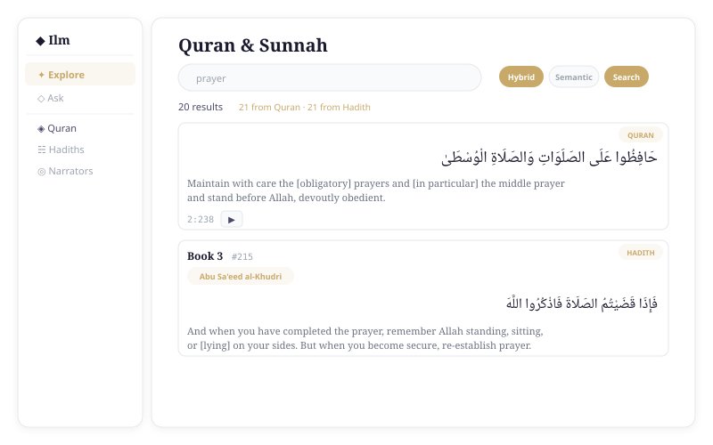
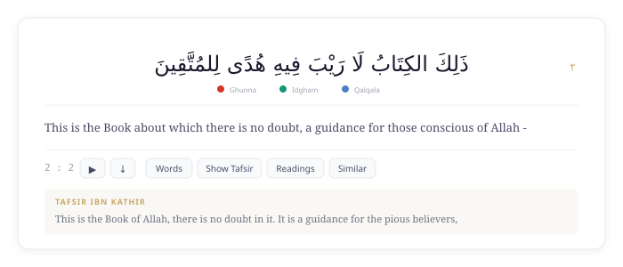
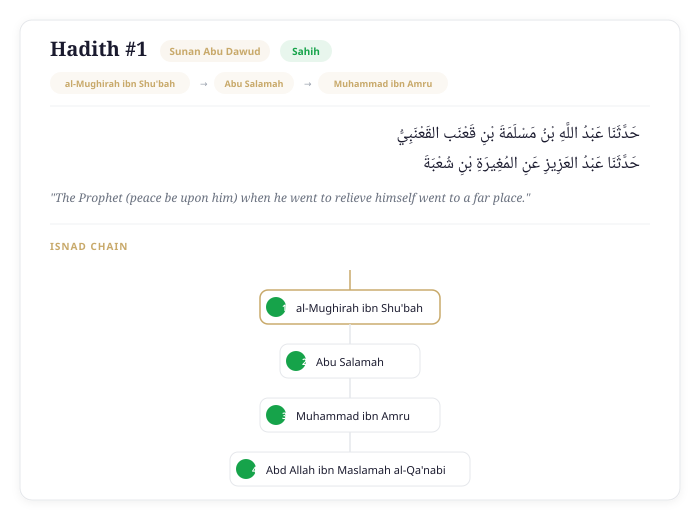
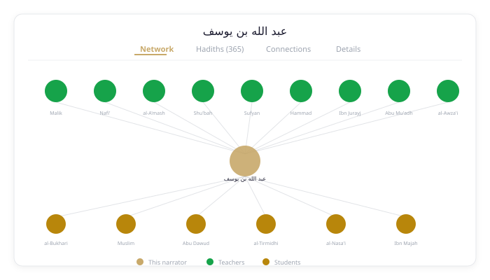
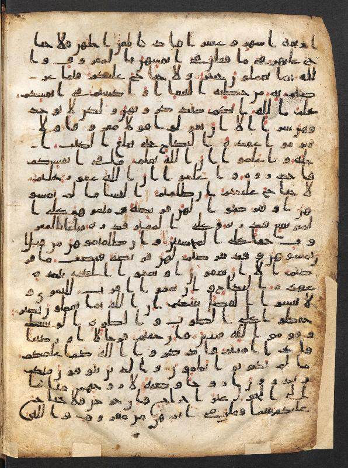
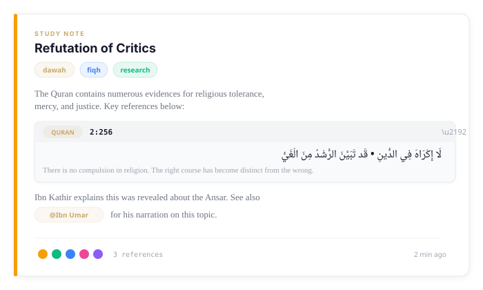

Search the Quran & Sunnah. Deeply.
A semantic search platform for Islamic scholarship — explore the Quran with tafsir, 34K+ hadiths with narrator chains, and interactive isnad graphs. Powered by meaning, not just keywords.

Find verses and hadiths by what they mean, not just keywords. Hybrid search fuses BM25 full-text with 1024-dimension semantic vectors across the entire corpus.

114 Surahs with Tajweed-colored Arabic, Sahih International translation, and expandable Tafsir Ibn Kathir commentary — per ayah.

Browse 34K+ hadiths from 926 books across 6 canonical collections, each with full narrator chains and source attribution.

Interactive graph visualization of 18K+ narrators. Trace isnad chains, explore teacher-student relationships, and check Ibn Hajar reliability grades.

View high-resolution images of early Quranic manuscripts per ayah from the Corpus Coranicum archive — Berlin-Brandenburg Academy of Sciences.

Capture your thoughts while studying. Annotate any ayah or hadith, collect evidence by topic, and embed Quran verses and hadiths inline with @mentions.
Built on open scholarly datasets. Every hadith, ayah, and narrator is traceable to its source.
Hadiths with narrator chains and knowledge graph from 6 canonical collections
QPC Hafs Arabic + Sahih International English from Quranic Universal Library
Classical exegesis per ayah via QUL
Human-verified English translations across 6 canonical collections
Narrators with Ibn Hajar's reliability classifications
Early manuscript images per ayah from Berlin-Brandenburg Academy
Ilm runs entirely on your machine — no cloud, no accounts, full privacy.
A modern stack built for Islamic scholarship.